CS184/284A Spring 2025 Homework 2 Write-Up
Link to webpage: cal-cs184-student.github.io/hw-webpages-hgonzalez8/
Link to GitHub repository: github.com/cal-cs184-student/hw-webpages-hgonzalez8

Overview
In this homework, I implemented algorithms for evaluating Bézier curves and surfaces, as well as several local mesh operations using the halfedge mesh data structure. These components together demonstrate how smooth parametric surfaces and discrete triangle meshes are represented and manipulated in computer graphics. In the first section, I implemented de Casteljau's algorithm to evaluate Bézier curves. I wrote a function that performs a single interpolation step between adjacent control points using a parameter t. Repeatedly applying this step reduces the list of control points until a single point remains, which lies on the Bézier curve. I then extended this idea to Bézier surfaces by implementing the same interpolation for Vector3D points. Using this, I implemented a function to fully evaluate a 1D Bézier curve and used it to compute points on a Bézier patch by first evaluating along one parameter (u) for each row of control points and then evaluating the resulting points along the second parameter (v). In the second section, I worked with the halfedge mesh representation to implement common mesh operations. I first computed area-weighted vertex normals by iterating around the one-ring neighborhood of a vertex and summing the cross products of adjacent triangle edges to approximate a smooth normal. I then implemented edge flipping, which replaces an edge shared by two adjacent triangles while maintaining mesh connectivity. Finally, I implemented edge splitting, which inserts a new vertex at the midpoint of an edge and reconstructs the surrounding triangles by creating new edges, faces, and halfedges while updating all connectivity pointers. One of the most interesting things I learned from this homework is how powerful recursive interpolation can be. De Casteljau's algorithm shows that Bézier curves can be constructed purely from repeated linear interpolation. Another key takeaway was how local mesh operations depend heavily on correct connectivity management. When implementing edge flips and splits, even a small mistake in updating pointers could easily break the mesh structure. This helped me better understand how the halfedge data structure encodes relationships between elements and why it is widely used in geometry processing.Section I: Bezier Curves and Surfaces
Part 1: Bezier curves with 1D de Casteljau subdivision
De Casteljau's Algorithm uses the divide and conquer method to evaluate Bezier curves. It uses subdivision to separate the curve into multiple sections using the control points as the starting point. Linear interpolation is used on each pair of control points to compute an intermediate control point on the line connecting the two original control points. The steps I used to implement de Casteljau's algorithm are as follows. For each level/step in the algorithm we: 1. Check the size of the vector: Since linear interpolation requires two points, we need to double check that the vector we have has two or more points to be able to compute the intermediate point. 2. Create a new vector object to store the new points: If there are enough points to work with, we will be able to do the calculations, so we need to have a place to store the new values. 3. Go through the elements in the vector: Since each computation requires point i and point i+1, we only loop through the vector starting from 0 until the second to last vector. 3a. Use the equation for linear interpolation: \( lerp = pointi * (1-t) + pointi+1 * t \) 3b. Store the new point into the vector we created: As we calculate these values, we want to store them in the same object to keep them together 4. Return the vector with intermediate control points: Once we have finished the linear interpolation for all pairs of points in the vector, we return the vector that has all the intermediate control points that will be used in the next level/step. These steps are done recursively until there is only one point left, which is the point on the curve.There are the images displaying each step and some curves with different control points and different parameters.
|
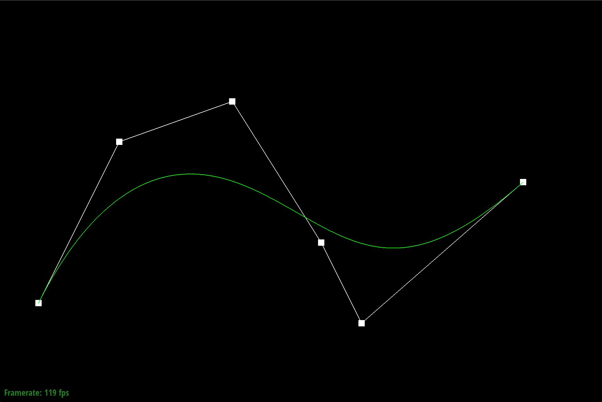 |
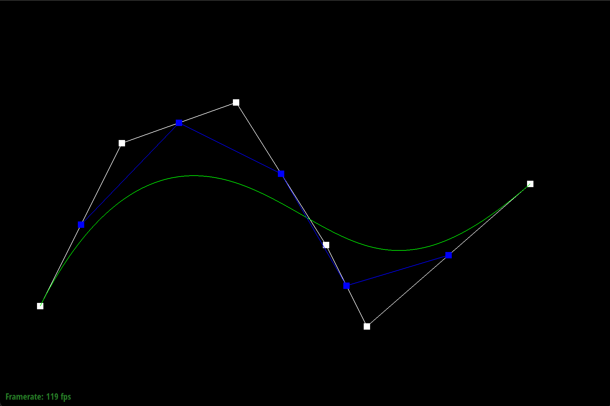 |
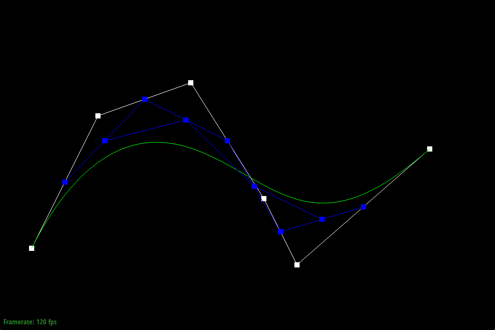 |
|
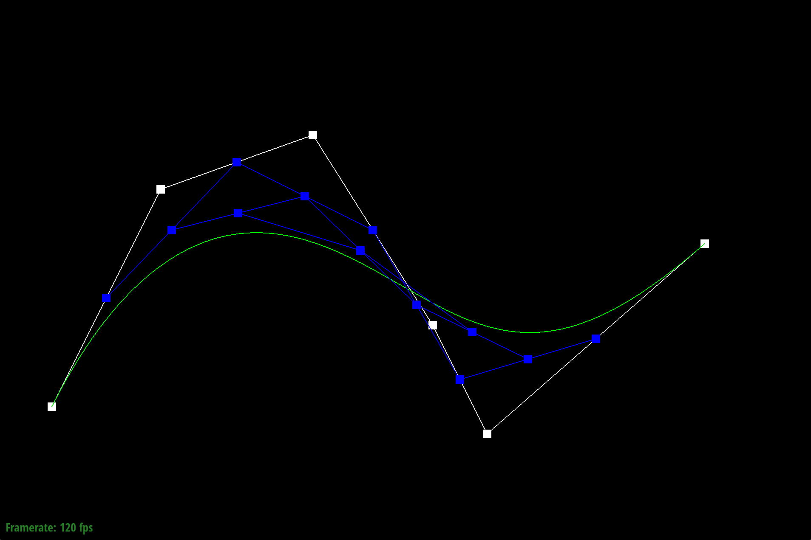 |
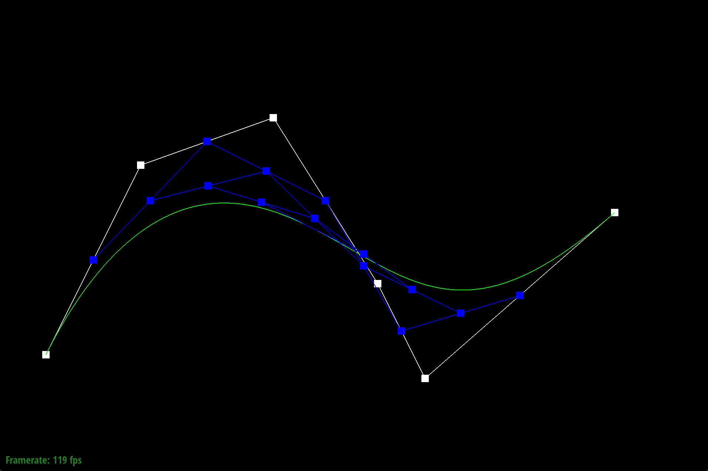 |
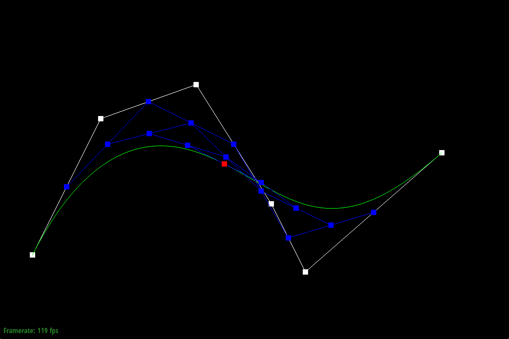 |
|
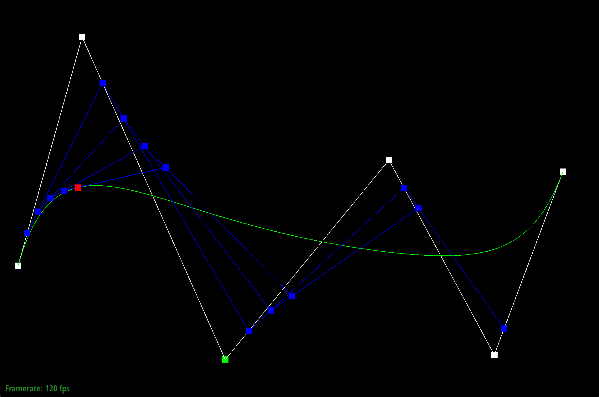 |
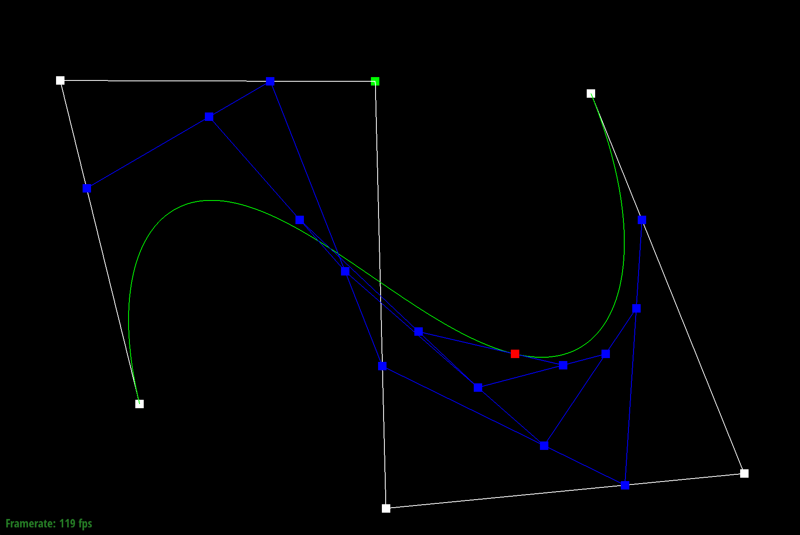 |
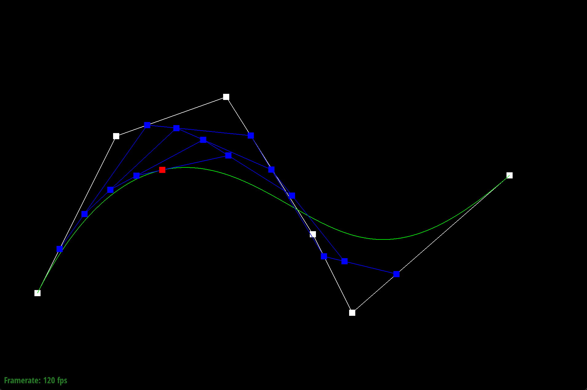 |
Part 2: Bezier surfaces with separable 1D de Casteljau
The method that is used to evaluate Bezier surfaces are to use two stages of De Casteljau's algorithm (applying it twice) in a row. The algorithm allows us to evaluate a point on a Bezier surface patch by using two different directions that have different parameters (u,v). This reduces the surface which is 2D into a sequence of curve evaluations which are 1D. Since the surface control points are in an n x n grid, there are two directions that the de Castelijau's algorithm for curves is applied to. I had to call the algorithm with two different parameters: u -- for each row vector: The algorithm is called for each row vector, so it gets compressed into a point v -- for each column vector: The algorithm is called for each column vector as well, so the size of the columns need to be checked I used the following steps to implement the algorithm for a surface:- Check the size of the vector of vectors: Just like before, since we are still using linear interpolation, we need more than one column to be able to do the computation in the second stage.
- Create a new vector: This vector with contain the new points that will be evaluated for each row
- Call the evaluation function on each row using u as the parameter: Each row is treated as control points for a curve, so we compute a point for each row
- Call the evaluation function on the column using v as the parameter: Since each row is a vector, once they are all evaluated, we are left with one column that forms a vector. We then evaluate that vector using the points that were derived before as our control points.
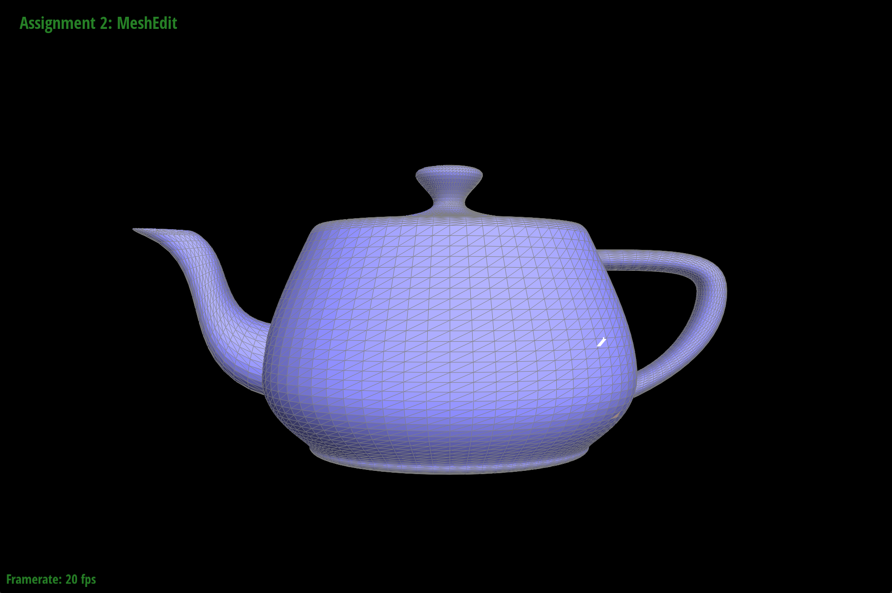
Section II: Triangle Meshes and Half-Edge Data Structure
Part 3: Area-weighted vertex normals
To implement area-weighted vertex normals, I utilized the method of edge traversal for a vertex and used the halfedges for computations. I had to figure out how to translate the math into the components that we have in the mesh. The weighted normal is derived using the face normal and the face area. Each face has a normal element, however it is the normalized version which is a unit vector. (To get the unnormalized vector we need to get the cross product of two vectors which we can form using the positions of three vertices of the face: the vertex we are given, and two of its neighboring vertices.) Once we have the face normal we need the area of the face which for a triangle surface is half of the magnitude of the cross product of the two edge vectors. When we bring the formula together we get: face_normal * face_area = \( [ u × v ÷ ||u × v|| ] * [ ||u × v|| ÷ 2 ] = ( u × v ) ÷ 2 \) I used this formula to compute the vector for each face.The steps I used are as follows:
- iterate through the faces incident to the vertex we have
- for each face, multiply the normal vector (not normalized vector) by its surface area to get the weighted normal: using the formula above
- sum all the area weighted normals of the faces
- Do 2 and 3 until we get back to the original halfedge that we started with
- Normalize the sum vector-- this gives us our final vector
- I also checked the sum vector to make sure it was not left at zero just in case because we need to normalize the sum vector.
Part 4: Edge flip
To implement edge flipping, I first identified all mesh elements surrounding the edge to be flipped. Starting from the halfedge associated with the input edge, I retrieved its twin and the four neighboring halfedges that form the two adjacent triangles. These halfedges define the two faces that share the edge and the four vertices involved in the operation. Before performing the flip, I checked whether either of the adjacent faces is a boundary face. If the edge lies on the boundary, the operation is not valid and the function returns without modifying the mesh. If both faces are interior, it confirms that the edge should be flipped.I determined the four vertices a, b, c, d, where b and c are the endpoints of the original edge and a and d are the opposite vertices of the adjacent triangles. The flipped edge then connects a and d. To update the mesh, I reassigned the connectivity of the six halfedges involved in the two triangles. This required updating each halfedge's next, twin, vertex, edge, and face pointers using setNeighbors. The halfedges around each face were reordered to reflect the new triangle configurations after the flip. I also updated the halfedge pointers for the affected vertices and faces to ensure they reference valid outgoing halfedges in the updated mesh.
|
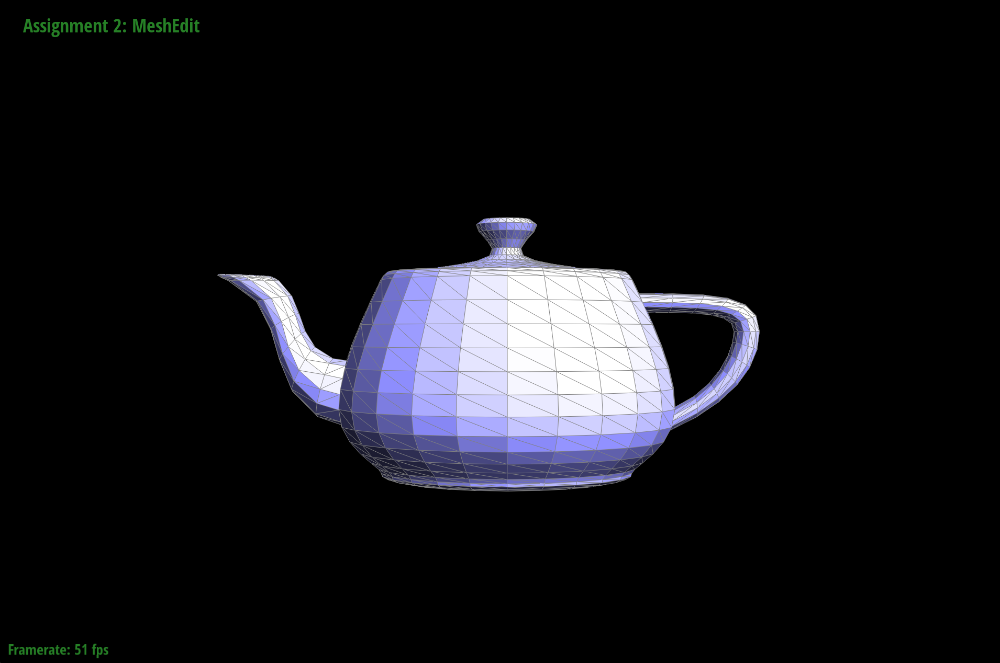 |
|
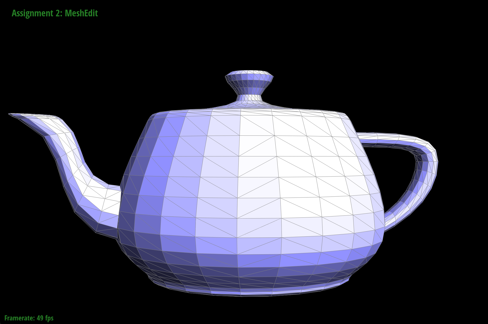 |
While implementing edge flip, I initially attempted to perform the operation without explicitly listing all surrounding halfedges, vertices, and edges, relying instead on following the connectivity structure conceptually from my notes. Although this approach worked logically on paper, it made debugging difficult because it was harder to trace which specific elements were being modified. To make the implementation easier to reason about, I switched to explicitly naming the six halfedges involved in the two adjacent triangles and the corresponding vertices and faces. During debugging, I encountered an issue where one of the edges would disappear after performing a flip. I attempted to use check_for to inspect the connectivity relationships, but tracking the addresses of each element became tedious. Since the issue appeared to be related to edge connectivity, I instead reviewed the halfedge reassignment logic and eventually discovered that two halfedges had been mistakenly swapped during the updates (when using setNeighbors). Correcting this mix-up fixed the disappearing edge and resulted in the correct mesh connectivity.
Part 5: Edge split
To implement edge splitting, I first collected all mesh elements associated with the edge to be split. Starting from the edge's halfedge, I retrieved the six halfedges that form the two adjacent triangles, along with their corresponding vertices, edges, and faces. I computed the midpoint of the original edge by averaging the positions of its two endpoint vertices. A new vertex was created at this midpoint. Next, I created the additional mesh elements required for the split operation: three new edges, six new halfedges, and two new faces. Splitting the edge divides the two original triangles into four smaller triangles, so the mesh connectivity must be updated accordingly. After allocating the new elements, I updated the connectivity of both the existing and newly created halfedges using setNeighbors. This involved assigning the correct twin, next, edge, vertex, and face pointers. so that each of the four resulting triangles had a consistent halfedge cycle. I also updated the halfedge pointers for the affected vertices, edges, and faces so that they reference valid halfedges in the modified mesh. Finally, the new vertex's halfedge pointer was set to point along the original split edge, as required.|
|
|
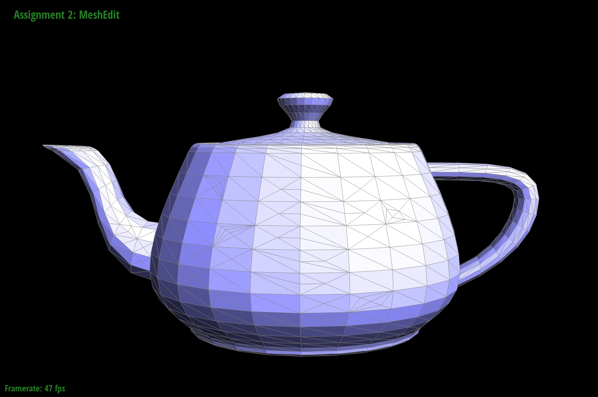 |
These other pictures show how edge flip and splits affect the shading in the teapot. This can mostly be seen on the spout and some in the handle.
|
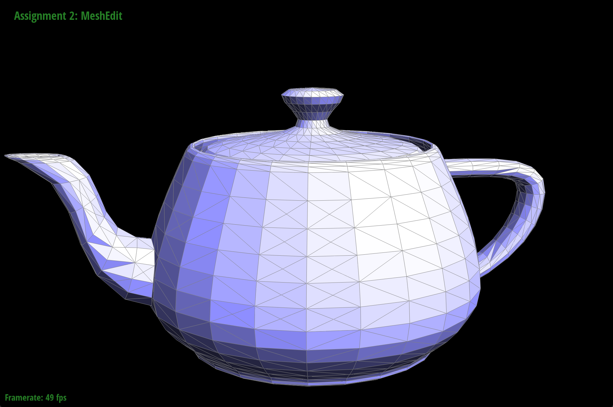 |
|
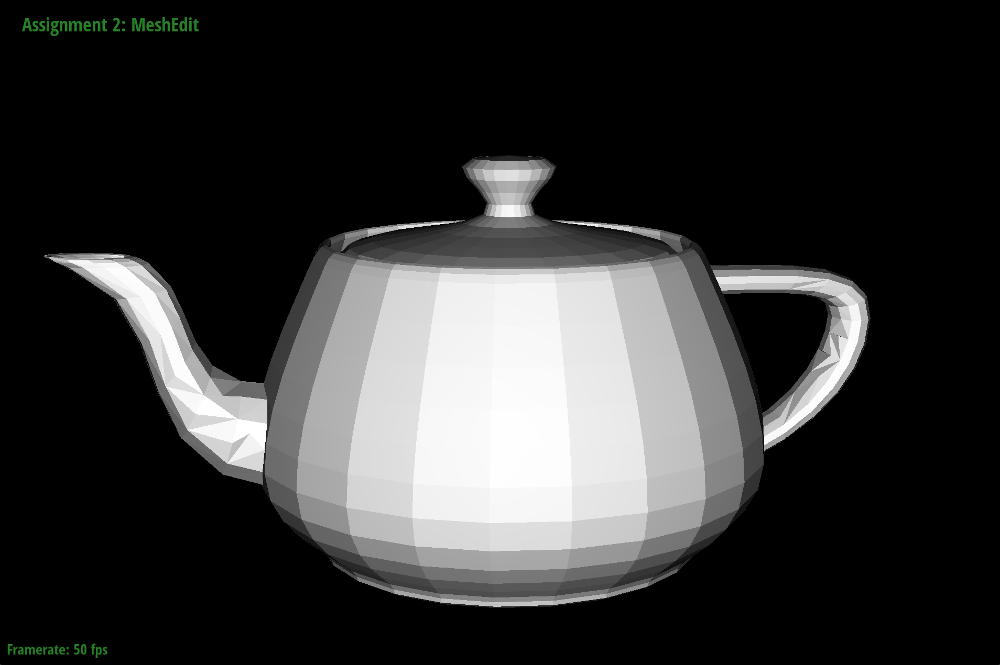 |
Based on the debugging difficulties I encountered in Part 4, I approached the edge split implementation differently. Instead of trying to reason about connectivity implicitly, I explicitly listed all mesh elements involved in the operation, including the six original halfedges, associated vertices, edges, and faces. This made it easier to track how the mesh should be restructured when the edge is split. Since edge splitting introduces several new mesh elements (a new vertex, multiple edges, halfedges, and faces), clearly identifying each element beforehand helped ensure that the assignments were consistent and easier to verify. This approach significantly reduced the difficulty of debugging and made it easier to confirm that all connectivity relationships were correctly updated.